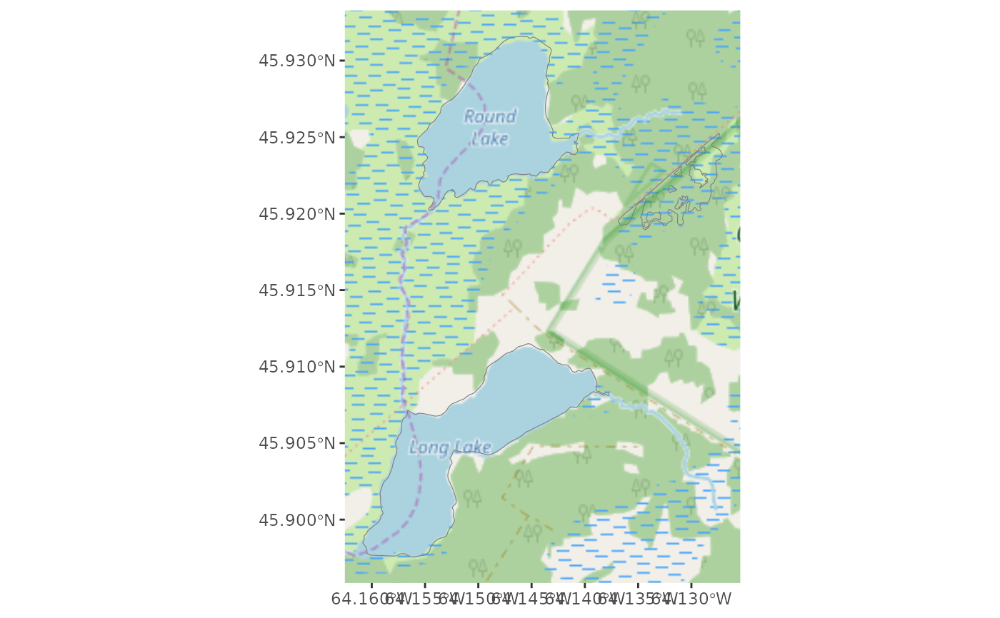

Uses rosm::osm.image() to add background tiles. If you are publishing
a map using these tiles, make sure to use the proper attribution
(e.g., "Copyright OpenStreetMap contributors" when using an
OpenStreetMap-based tile set).
annotation_map_tile(
type = "osm",
zoom = NULL,
zoomin = -2,
forcedownload = FALSE,
cachedir = NULL,
progress = c("text", "none"),
quiet = TRUE,
interpolate = TRUE,
data = NULL,
mapping = NULL,
alpha = 1
)
GeomMapTileAn object of class GeomMapTile (inherits from Geom, ggproto, gg) of length 5.
The map type (one of that returned by rosm::osm.types)
The zoom level (overrides zoomin)
Delta on default zoom. The default value is designed
to download fewer tiles than you probably want. Use -1 or 0 to
increase the resolution.
Re-download cached tiles?
Specify cache directory
Use progress = "none" to suppress progress and zoom output
Use quiet = FALSE to see which URLs are downloaded
Passed to grid::rasterGrob()
Specify data and mapping to use this geom with facets
Use to make this layer semi-transparent
A ggplot2 layer
library(ggplot2)
load_longlake_data()
ggplot() +
annotation_map_tile(zoom = 13, cachedir = system.file("rosm.cache", package = "ggspatial")) +
geom_sf(data = longlake_waterdf, fill = NA, col = "grey50")
#> Zoom: 13
